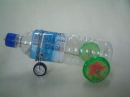
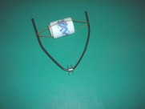

橡皮筋動力有兩種：一種是拉伸力，一種是扭轉力。
拉伸力就是把橡皮筋拉長，它有彈力要把自己縮回來。
扭轉力就是把橡皮筋扭轉，它有彈力要把自己扭回來。
所以囉，把橡皮筋裝在車上，再把它拉長或是扭轉，就會帶著輪子往相反的方向轉動了。
| 伸拉力的應用舉例 |
 |
橡皮筋一端固定在車頭，另一端綁在後車軸上，把後輪向後轉個幾圈，就會拉緊橡皮筋。放到地上後，橡皮筋的彈力拉動後輪向前轉，車子就前進啦﹗ |
| 扭轉力的應用舉例 |
 |
橡皮筋兩端固定在車身，中央固定在輪子上，當轉動輪子向後幾圈，橡皮筋就會扭轉。放到地上後，橡皮筋要扭回來的力，帶得輪子向前轉，車子也就向前走了。 |